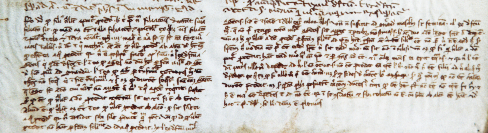

CORPUS THOMISTICUM
Fragmentum a socio notato in autographo S. Thomae de Aquino
Coria, Museo Catedralicio, f. 1 marg. inf.
Super Sent., lib. 3 d. 11 q. 1 a. 1 co. [redactio posterior]

© 2006 Fundación Tomás de Aquino et Museo Catedralicio de Coria. Iura omnia asservantur